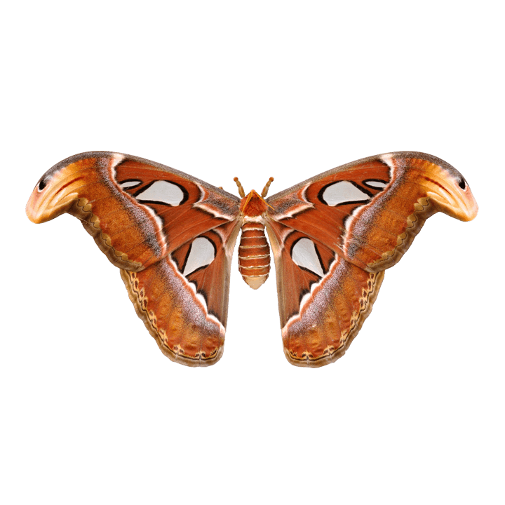
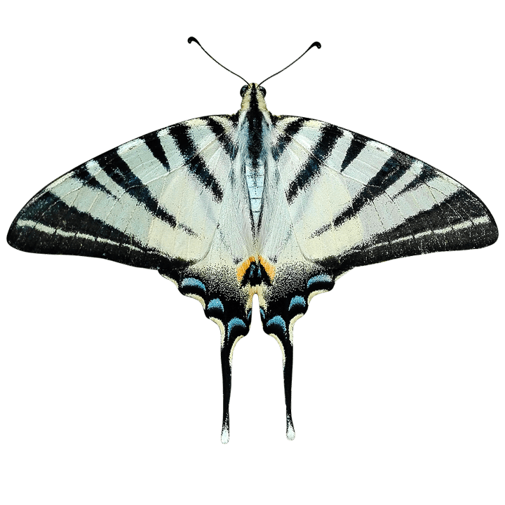
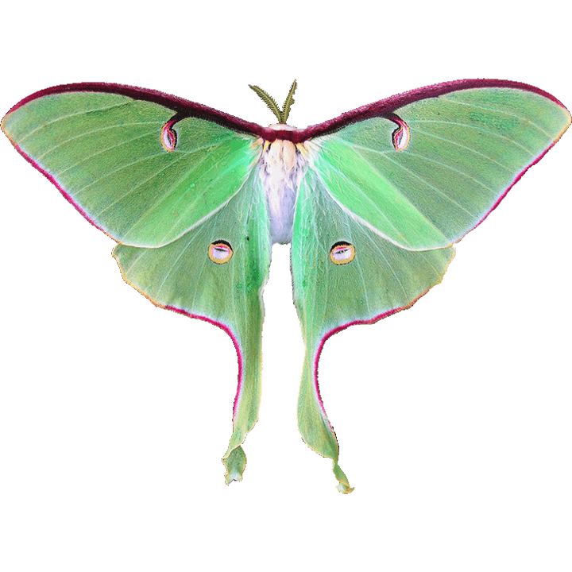
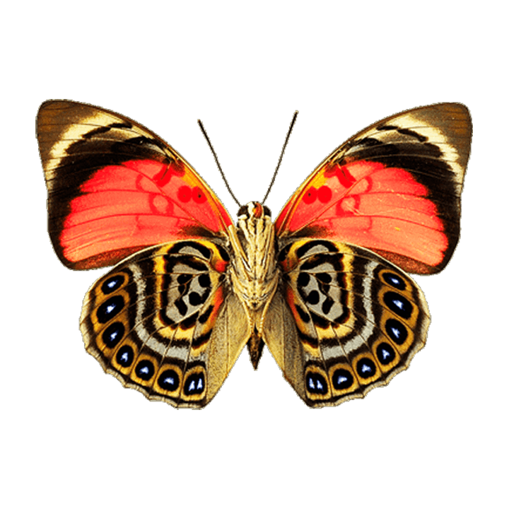
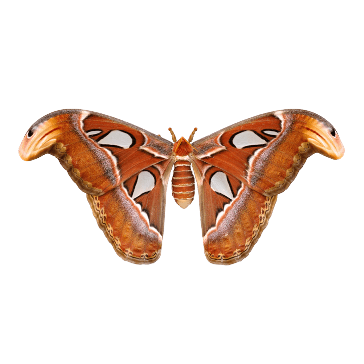
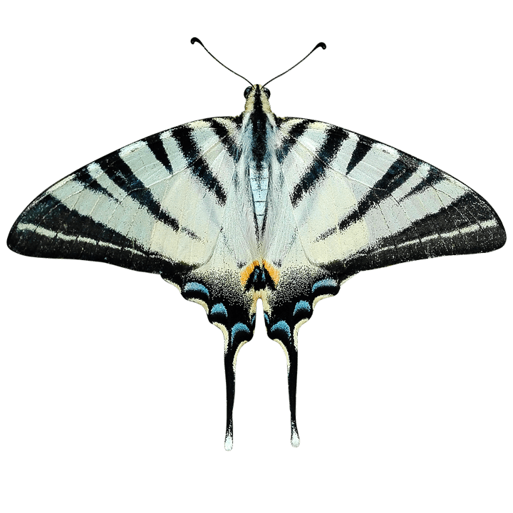
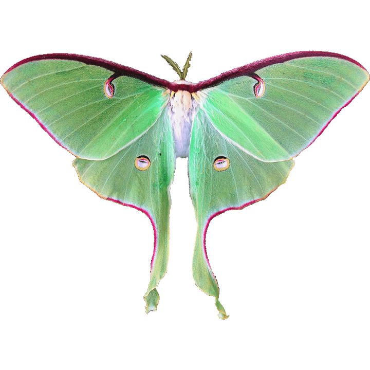
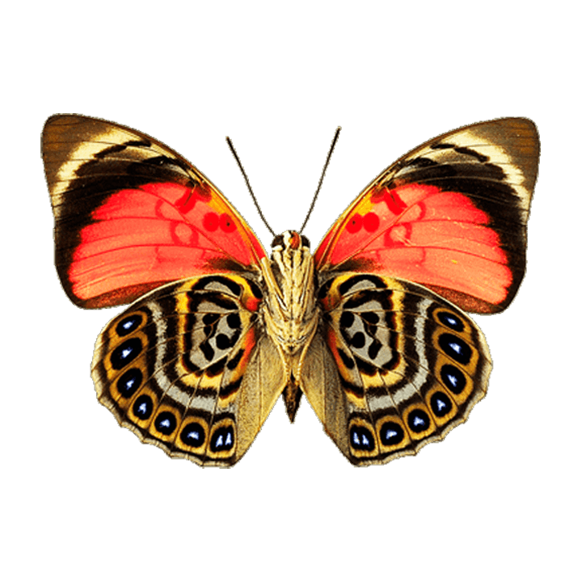

Hello, World
Fake User is a project focused on delivering Dystopic Sounds, Brain Melting Visuals, and Sharing Information. All Ableton.als and Blender.blend files are open source, free to use under an MIT license, and hosted on GitHub. Further material can be found on Youtube, and don't forget to stay up to date on the Social Medias


 






